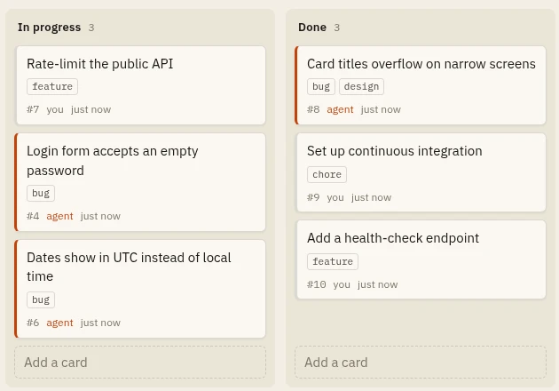

THE AGENT'S CHANGES, LIVEAI agents · Bayesian inference
Shared Board
A kanban board that a person and an AI agent use together: the person in the browser, the agent through a command-line tool. I used it to measure how three designs of that tool change the work of three Claude models, over 414 graded runs and a Bayesian model of the results.
0.29×wrong commands when the CLI accepts what agents guess
+19%cost for the strongest model with more helpful output
11×cheaper per task: Haiku 5.5 against Sonnet 5.5